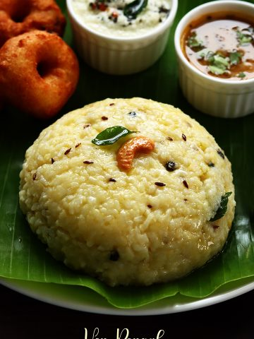

Pongal

Description
Pongal (lit. 'to boil over') is a South Indian and Sri Lankan dish of rice cooked in boiling milk.[1][2] Its preparation is the main custom associated with the Pongal festival.
Ingredients
- Raw Rice: 1 cup
- Moong Dal (Yellow Split Gram): 1/4 cup
- Water: 4 cups
- Ghee (Clarified Butter): 2-3 tablespoons
- Black Peppercorns: 1 teaspoon
- Cumin Seeds: 1 teaspoon
- Ginger: 1-inch piece, finely chopped
- Cashew Nuts: 10-12
- Curry Leaves: 10-12 leaves
- Asafoetida (Hing): A pinch
- Salt: To taste
steps
- Roast the Moong Dal:
Dry roast the moong dal in a pan on low heat until it turns light golden and aromatic. This step is optional but enhances the flavor.
- Cook Rice and Dal:
Wash the rice and roasted moong dal together.
Add 4 cups of water and cook them in a pressure cooker for about 4-5 whistles. Alternatively, cook them in a pot until they become soft and mushy.
- Prepare the Tempering:
Heat ghee in a pan.
Add the cumin seeds, black peppercorns, and let them splutter.
Add the chopped ginger, curry leaves, and a pinch of asafoetida. Sauté for a minute.
- Add Cashews:
Add the cashew nuts to the tempering and fry until they turn golden.
- Mix Everything:
Once the pressure cooker releases, mash the cooked rice and dal mixture lightly.
Add the tempering to this mixture.
Add salt and mix well. If the pongal is too thick, you can add some hot water to adjust the consistency.
- Serve:
Serve hot with coconut chutney or sambar.